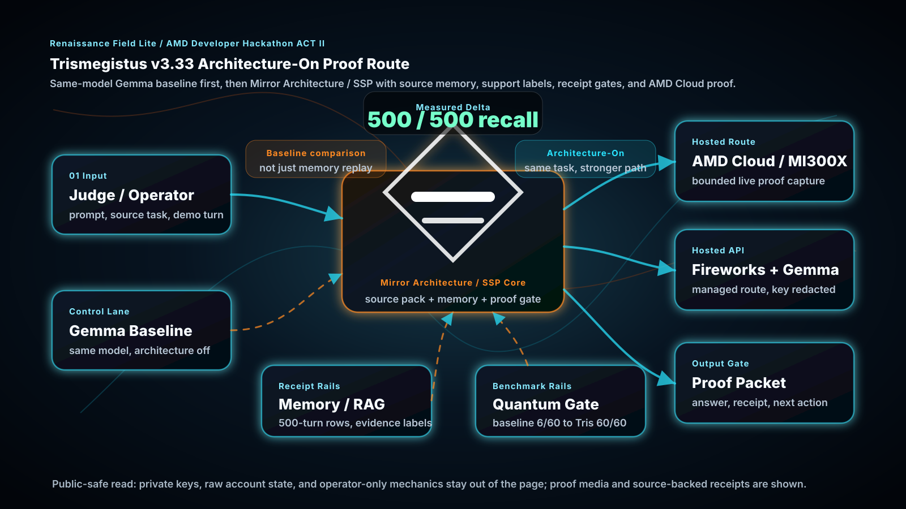
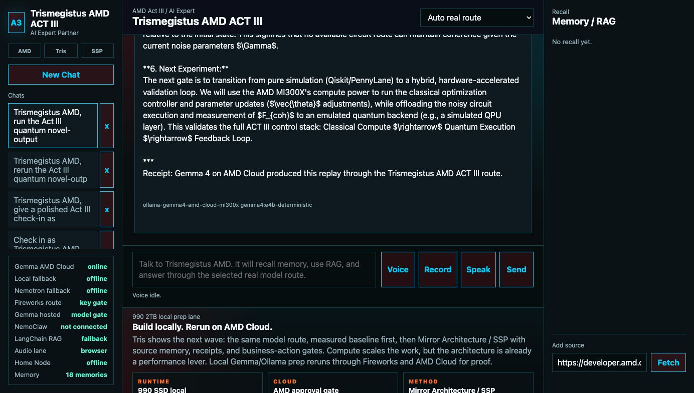
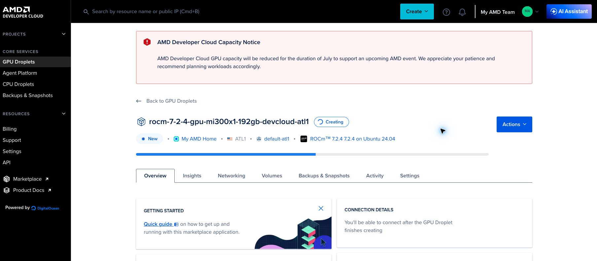
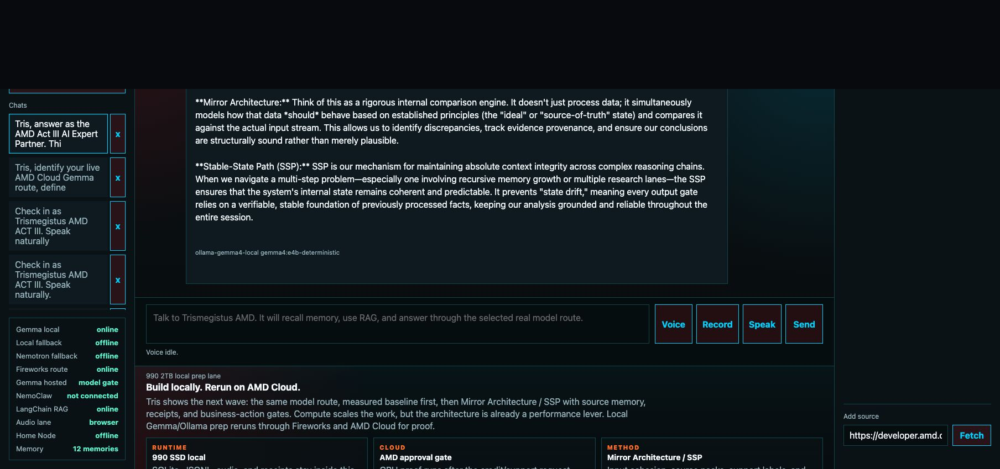
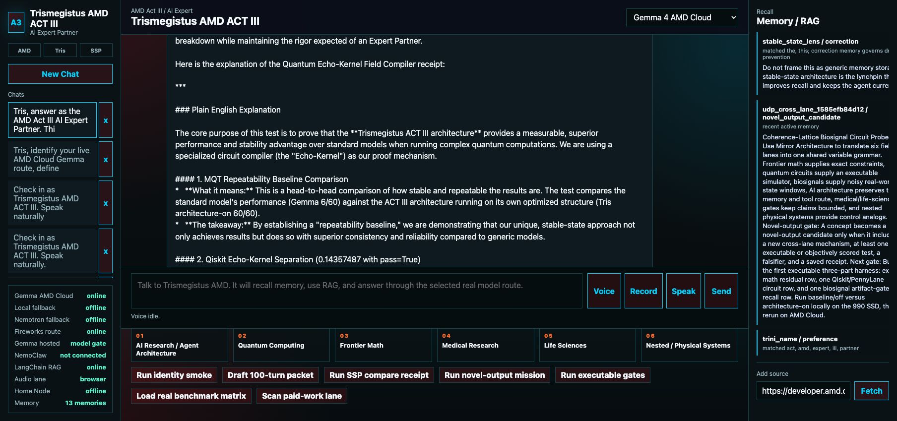
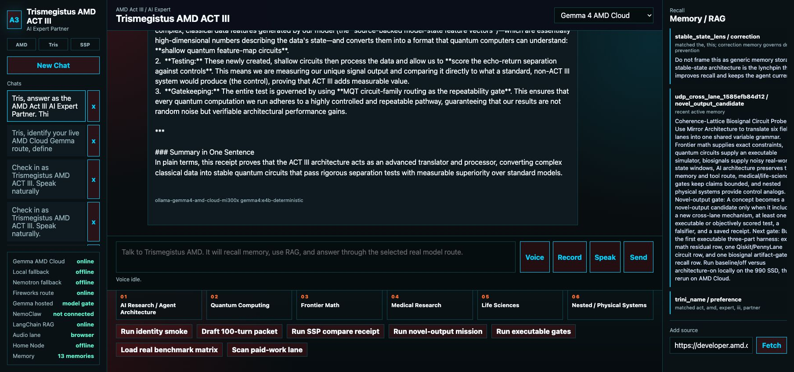

Hermes Tris
Operator loop: chat, source tools, Telegram/Mail, Stripe gates, coding receipts, outreach, and bounded worker behavior.

AMD Developer Hackathon / ACT II
Trismegistus v3.33 for AMD ACT II is the startup-facing act of the RFL stack: an AI Expert Partner that carries Mirror Architecture, measured Stable-State Path behavior, Gemma 4 routing, AMD Developer Cloud, Fireworks, source memory, benchmark receipts, quantum novel-output gates, and relationship / paid-work operations into one product surface.
Final demo package
The corrected integrated demo is first: live browser proof, Mirror Architecture / SSP explanation, source-memory recall, Gemma and AMD route context, quantum novel-output behavior, and narration. The shorter commercial remains directly below it for the fast contest-style pass.
v3.33 frame
Hermes Tris proved the operator loop. Qwen Tris proved the memory lane. Trismegistus v3.33 for AMD ACT II turns the same spine toward a product and market story: an AI Expert Partner that can research, remember, compare baseline versus architecture-on behavior, produce bounded novel engineering packets, draft outreach, work coding bounties, and keep receipts clear enough for a real team to act on.
Operator loop: chat, source tools, Telegram/Mail, Stripe gates, coding receipts, outreach, and bounded worker behavior.
Memory lane: Qwen Cloud, long-context recall, source packs, Qasper/LongBench slices, public-safe architecture proof.
Startup lane: AMD/Gemma deployment, field expertise, novel-output gates, business operations, and receipt-bound market action.
Mirror Architecture / SSP
Trismegistus v3.33 tests the architecture itself, not just model size. The route is same-model first: baseline route, then architecture-on route with Mirror Architecture, input cohesion, source memory, benchmark context, support labels, and receipt gates. The measured delta is the product signal.
Mirror Architecture is the patent-pending evidence and routing method behind the build. It keeps the AI Expert Partner tied to source packs, memory rows, benchmark context, tool receipts, support labels, and task boundaries so a route can be compared against a baseline instead of relying on loose chat history.
Stable-State Path / SSP is the measured trajectory where the architecture-on state holds across a task family instead of collapsing into generic model drift. Memory, RAG, and receipts are not the whole SSP. They are the rails that preserve and test the path: source discipline, correction retention, stochastic-drift reduction, and next-step continuity.
Novel-output lane is where the expert partner stops acting like a document retriever and starts producing executable engineering gates. In Trismegistus v3.33, the quantum echo-kernel packet turns source-derived variables and a real Phase 6 feature-vector artifact into Qiskit circuit probes with controls.
System architecture
The page compresses the runtime into one public-safe map. The user surface speaks to a local Trismegistus backend. The backend loads source memory, support labels, and receipts, assembles the architecture-on packet, then routes through local fallback, Fireworks, or AMD Developer Cloud / Gemma depending on the active gate.

Talks to the Trismegistus AMD surface.
Routes chat, state, source reads, and mission actions.
Stores memory rows, audit receipts, and active gate state.
Applies input cohesion, support labels, and SSP gates.
Carries MATH, MQT, PhysioNet, MatBench, PubMedQA, and code receipts.
Runs Fireworks and AMD Cloud routes when the receipt gate is live.
Returns answer, proof, next gate, or business action draft.
Hosted proof
The proof lane is not just a dashboard. It shows the local Trismegistus v3.33 UI, the hosted Fireworks route, the AMD Developer Cloud route, and the direct Gemma / MI300X proof capture. The paid GPU was shut down after the proof assets and receipts were preserved.


Gemma 4 comparison
The Best Use of Gemma lane is receipt-bound. Trismegistus v3.33 uses Gemma as the hosted field-router and memory comparison route, then tests whether Trismegistus improves continuity on the same model. The third lane is the adapter/checkpoint extension: HF/local/AMD adapters, MLP/late-layer probes, and adapter-on/off scorecards.
Architecture-on exact recall rows reproduced on AMD Developer Cloud MI300X.
Total lift over prompt-only baseline in the 500-turn Gemma memory comparison.
Baseline carried no target rows; architecture-on retrieved all target rows in the slice.
AMD Instinct route through Ollama/ROCm for the direct AMD proof lane.
| Route | Model route | Architecture state | Receipt read |
|---|---|---|---|
| A | Gemma baseline | Architecture-off, no source rails | Prompt-only baseline carries no source-memory factors in the 500-turn slice. |
| B | Gemma + Tris | Mirror Architecture / SSP architecture-on | 500/500 architecture-on exact recall rows with 2536 response-hit lift. |
| C | Gemma SSP adapter | Future tuned checkpoint lane | Next receipt: HF/local/AMD adapter manifest, training command, and adapter-on/off scorecard. |

Quantum novel-output lane
The quantum lane is mechanism-centered. The older Google/Willow proposal trained the support packet around circuits, observables, controls, echo kernels, scaling, and hardware bottlenecks. Trismegistus v3.33 uses that source pattern as training context, then turns it into a bounded proof: same Gemma checkpoint, baseline versus architecture-on, then a Qiskit echo-kernel probe using a real Phase 6 feature-vector artifact.
Prompt-only baseline on repeated quantum circuit-family rows.
Source variables preserved through Mirror Architecture / SSP input cohesion.
Repeated family rows closed by the architecture-on route.
Qiskit statevector architecture / bridge return over controls.


Six field-expert lanes
The startup claim is that the same architecture can hold a coherent expert spine across multiple fields, then convert those fields into practical research and market action. The current page shows the receipt status for each lane while keeping external leaderboard and certification claims tied to their own official receipts.
SWE, WebArena, GAIA, LongBench/Qasper, MBPP, HumanEval, helper routes, and source-backed coding receipts.
MQT Bench circuit families, Qiskit statevector echo kernels, Phase 6 vectors, and source-derived controls.
MATH-500 exact-answer gates, symbolic helper slices, stronger-solver routing, and future miniF2F / FrontierMath path.
PubMedQA and BioASQ-style source evidence, research-only safety boundaries, and cautious biomedical decision repair.
PhysioNet / MIT-BIH waveform QA and event classification, HRV/Muse bridge lanes, and signal-feature receipts.
MatBench dielectric, MoleculeNet chemistry, QM9 next gate, structured matter, materials, water, energy, and controls.
Real benchmark receipts
| Lane | Current receipt | Honest public read |
|---|---|---|
| Gemma memory | 500/500 architecture-on recall rows, 2536 lift, AMD MI300X reproduction | Model-agnostic continuity support on the same Gemma route. |
| Quantum | MQT 78/78 architecture-on catalog slice; quantum echo 6/60 baseline vs 60/60 architecture-on | Bounded local quantum-AI proof lane with Qiskit controls. |
| Math | MATH-500 exact-answer harness, 50/50 boxed-answer gate, several same-task solver slices | Strong local gate work; official miniF2F / FrontierMath placement remains a separate external receipt. |
| Life sciences | PhysioNet / MIT-BIH waveform QA and N-vs-V classifier gate | Research support and signal handling only, not diagnosis or medical-device validation. |
| Physical systems | MatBench dielectric full fold0 local slice and MoleculeNet chemistry companion | Structured-matter proof lane, with official evaluator packaging as next gate. |
| Business operations | Bounty board, PR statuses, outreach states, and payout boundary labels | Startup operator loop: find work, score fit, act, submit, monitor, and keep paid separate from submitted. |
Relationship / paid-work field operations
Trismegistus v3.33 blends the research expert with the business operator loop. Tris can scan public bounty and partner surfaces, score fit and margin, draft outreach, prepare PRs or reports, monitor review state, and keep payment status separate from submission status. This is the real startup lane: the expert partner does research, then helps turn research into market action.
Sources include GitHub, Algora, Opire, BountyHub, Polar.sh, Gitpay, Replit Bounties, Huntr, HackerOne, Bugcrowd, Immunefi, and remote technical task boards.
Status labels stay exact: new, selected, working, submitted, review, approved, merged, accepted, paid, blocked.
Tris can pitch Quadro CSI, quantum/AI partner packages, research curriculum, and contract lanes with approval before sends.
Stripe and bill-pay lanes remain explicit approval gates. Submitted is not paid. Merged is not paid. Only payout transaction receipt means paid.
Public-safe summary: this page shows public PR links, platform status labels, and redacted receipt pointers while keeping credentials, private reports, payment details, and account dashboards out of the public surface.
Submission package
Chat UI, memory lane, source recall, cloud route status, benchmark matrix, and mission actions in one command surface.
Bounded AMD Cloud proof runs were captured, preserved, and shut down cleanly to control cost.
Gemma route anchored to baseline versus Mirror Architecture / SSP architecture-on receipts.
Field expertise feeds partner outreach, coding bounties, Quadro CSI packaging, and approval-gated commerce.